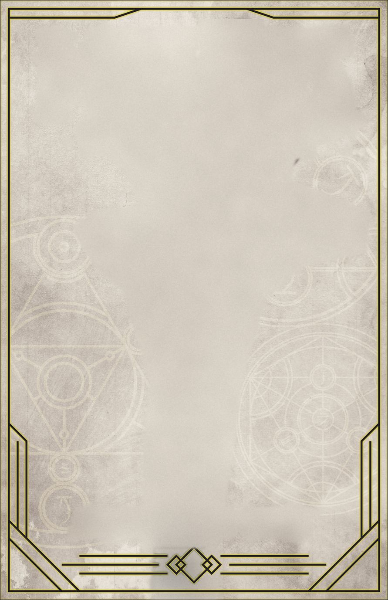
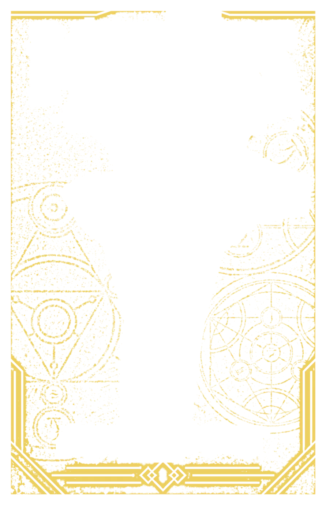
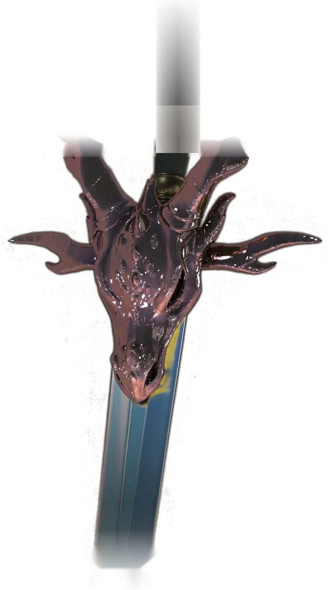
MORTZEEL'SLOST&FOUND
In a world of epic heroes and terrifying monsters someone has to have a day job.
Detective Kaivel Mortzeel and Tal'avera Liwood, an elven wizard fuelled by tea, take the cases nobody else will.
Open the shop
The cases so far
Mortzeel's Lost & Found is a crime-fantasy series: a former thief with a somewhat mysterious past and an elven wizard still fuelled by tea, on investigations that lead them down dark and twisted paths, surviving on dumb luck and pure chaos.
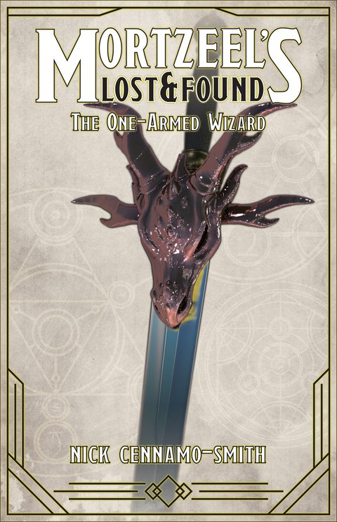
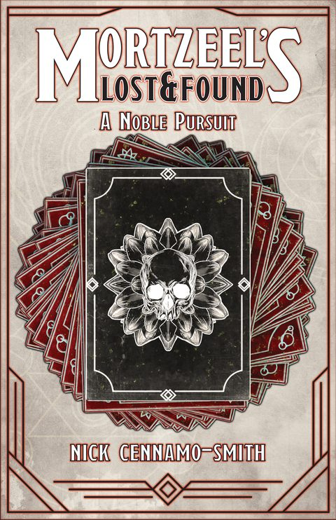
THE SECOND CASEA Noble Pursuit
A deck of cards and a skull at its heart.
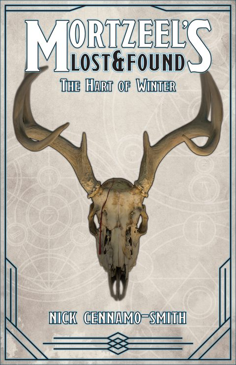
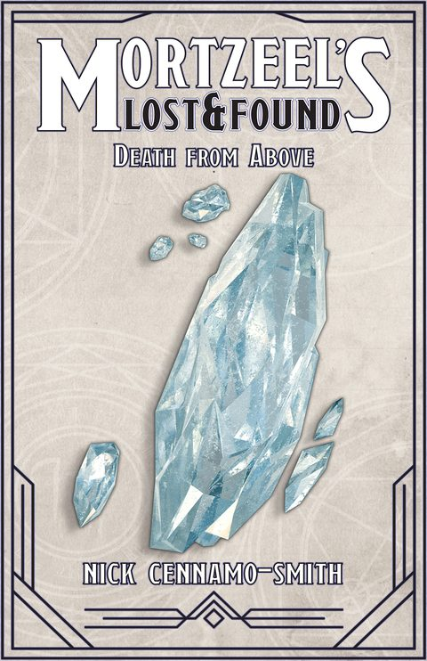
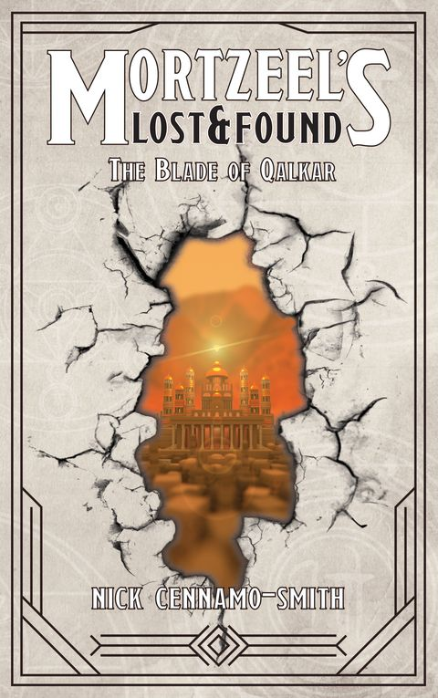
Other worlds on the desk
Crime, fantasy, sci-fi and horror, blended for the ultimate escapism.
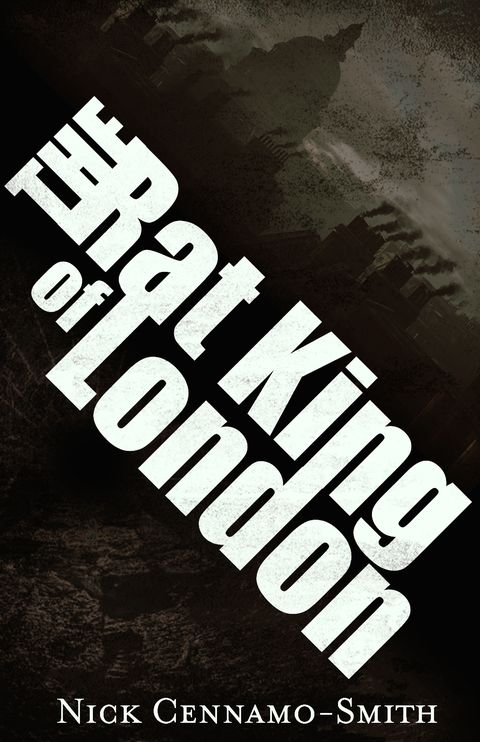
The Rat King of London
London, 1889. Below the city, a society of hyper-intelligent rodents, victims of experimentation, faces its own industrial revolution.
Paperback £8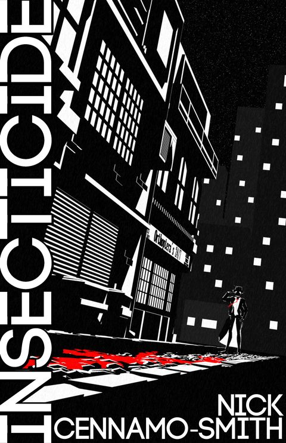
Insecticide
The city of Los Blatta is crawling with criminals. Detective Gene Hopper, a murder, and a world of humanoid insects. An episodic noir.
Read it on Patreon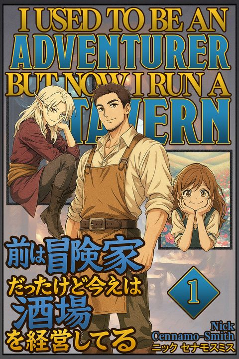
I Used to be an Adventurer, but now I Run a Tavern
A cosy light novel: Caelan Reed hangs up his sword to raise his daughter Elise and run the Hound and Hearth.
Read it on PatreonFrom Alda
Nick is a designer as well as a writer, and the world of the books comes off the page too.
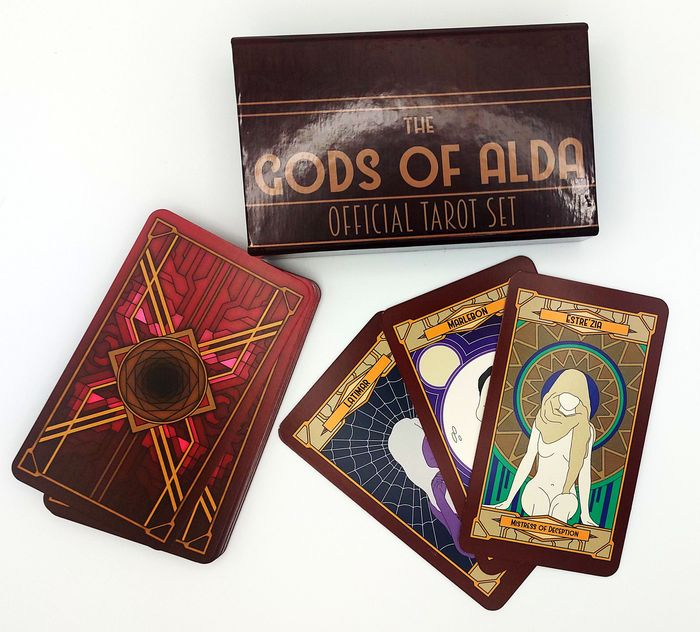
The Gods of Alda tarot set
£35
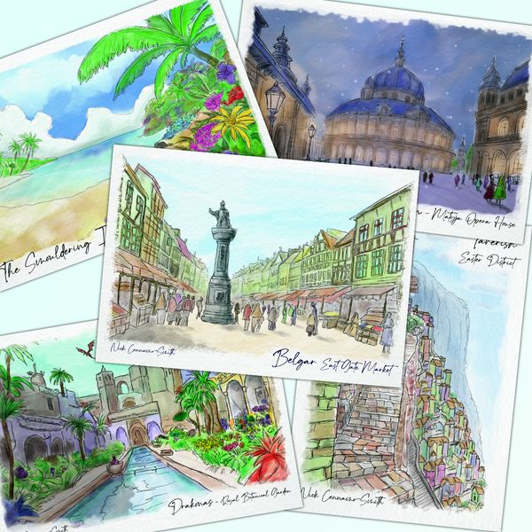
Postcards of Alda
50p each
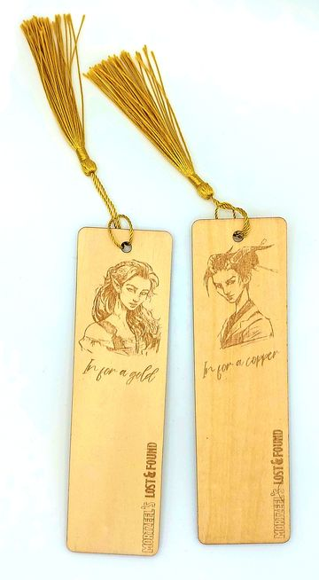
Wooden portrait bookmarks
£3
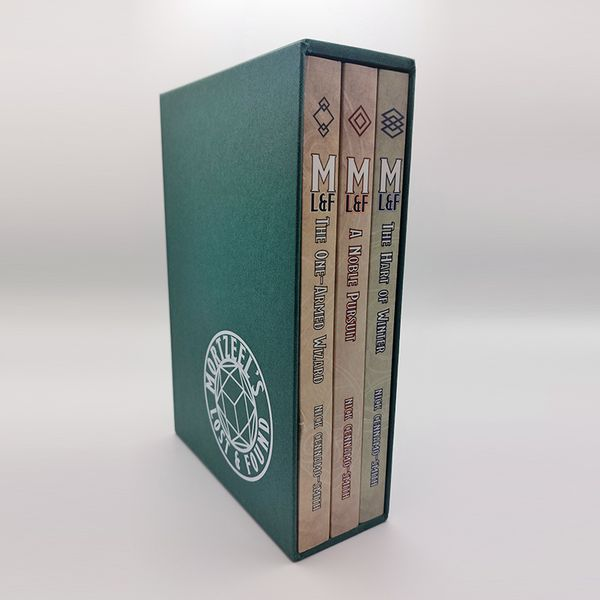
The trilogy box sets
Hardback £55, limited. Paperback £35, pre-order.
Nick
Nick Cennamo-Smith writes crime-fantasy for adults and teens. He was born in Luton and has lived most of his life in various cities around the country.
When he isn't writing he works as a designer, spends time with his family, or rolls polyhedral dice in another fantasy world.
"The book has a lot of humour too, and tonally reminiscent of T. Kingfisher (who is my favourite author, so that's a compliment!)"LAZELLIA ON GOODREADS
"Full of interesting characters, a fascinating blend of humans, trolls, orcs and mixtures of all sorts."SHARON GOODWIN ON AMAZON
Find the agency
Oxford Indie Book Fair, Sunday 22 November, Oxford Examination Schools.
Bring the case you're stuck on. Or take the hardback trilogy home while the limited run lasts.